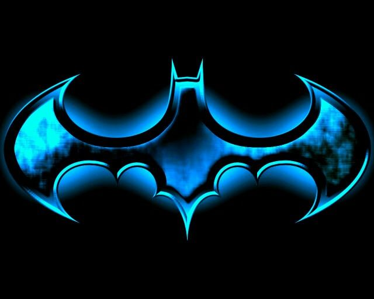
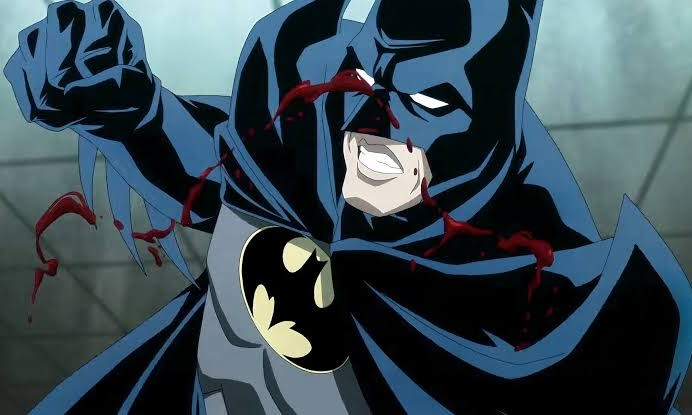
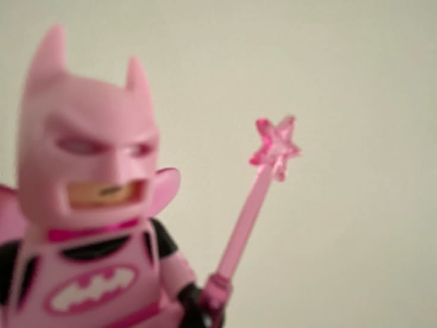

Bruce Wayne é bilionário e herdeiro de uma das empresas mais poderosas de gotham
A noite, ele veste a máscara e decide, sozinho, quem é culpado e quem merece punição. ninguém pediu isso a ele: Bruce simplesmente se deu o direito de fazer justiça com as própias mãos.
assinado: Coringa.